Lebih dari dua dekade berdedikasi menghadirkan solusi air bersih berkualitas tinggi untuk industri dan masyarakat Indonesia.
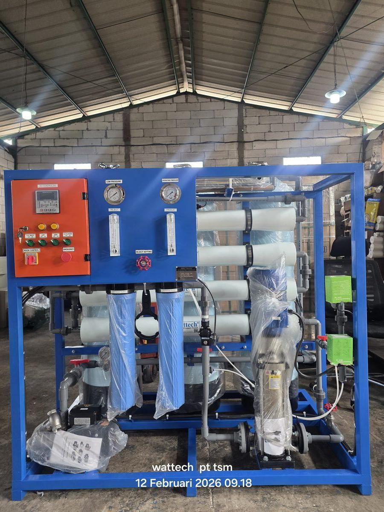
PT Tirta Sumber Makmur (TSM) adalah perusahaan Indonesia yang telah berdiri sejak tahun 2002, berkomitmen menghadirkan solusi reverse osmosis dan desalinasi air berkualitas tinggi untuk memenuhi kebutuhan air bersih berbagai sektor industri dan komersial di seluruh tanah air.
Berlokasi strategis di Kabupaten Bekasi, Jawa Barat, kami melayani pelanggan dari Sabang hingga Merauke dengan tim insinyur berpengalaman, teknologi mutakhir, dan dukungan purna jual yang komprehensif selama lebih dari 24 tahun.
Menjadi perusahaan penyedia solusi water treatment terkemuka dan terpercaya di Indonesia, yang berkontribusi nyata dalam mewujudkan akses air bersih berkualitas untuk seluruh lapisan masyarakat dan industri nusantara.
Nilai-nilai ini menjadi landasan dalam setiap keputusan dan tindakan yang kami ambil.
Kami berkomitmen pada kejujuran, transparansi, dan tanggung jawab dalam setiap aspek bisnis kami.
Terus mengadopsi teknologi terdepan untuk menghadirkan solusi yang lebih baik dan efisien bagi klien.
Standar kualitas tertinggi diterapkan pada setiap produk, layanan, dan proyek yang kami kerjakan.
Membangun hubungan jangka panjang yang saling menguntungkan dengan klien, pemasok, dan mitra bisnis.
Berkomitmen pada solusi yang ramah lingkungan dan mendukung pengelolaan air yang berkelanjutan.
Cepat dan tanggap dalam merespons kebutuhan dan permasalahan yang dihadapi klien kami.
Empat dekade perjalanan panjang membangun kepercayaan dan keahlian di industri water treatment Indonesia.
PT Tirta Sumber Makmur didirikan di Bekasi, Jawa Barat, dengan fokus awal pada distribusi dan instalasi sistem filtrasi air untuk industri lokal.
Memperkenalkan teknologi Reverse Osmosis pertama di lini produk kami, menjawab kebutuhan industri manufaktur yang berkembang pesat di kawasan Jabodetabek.
Memperluas jangkauan pelayanan ke seluruh Indonesia, termasuk proyek-proyek pertama di kawasan kepulauan terpencil menggunakan teknologi desalinasi.
Memperoleh berbagai sertifikasi internasional dan memperkenalkan sistem RO berteknologi tinggi dengan otomasi penuh untuk industri farmasi dan pembangkit listrik.
Mengintegrasikan sistem monitoring IoT real-time, mengembangkan solusi Zero Liquid Discharge (ZLD), dan memperkuat komitmen pada teknologi ramah lingkungan.
Dengan lebih dari 500 proyek selesai dan 100+ klien aktif, TSM terus tumbuh sebagai mitra water treatment terpercaya untuk masa depan air bersih Indonesia.
Komitmen kami terhadap kualitas dibuktikan dengan berbagai sertifikasi dan pengakuan resmi.
Sistem Manajemen Mutu internasional
Sistem Manajemen Lingkungan
Keselamatan dan Kesehatan Kerja
Izin usaha resmi Republik Indonesia
Standar Good Manufacturing Practice
Pemasok sistem air untuk industri farmasi
Sebagai perusahaan yang bergerak di bidang pengelolaan air, kami percaya tanggung jawab kami melampaui transaksi bisnis — untuk lingkungan, masyarakat, dan keberlanjutan sumber daya air Indonesia.
Bersama pemerintah daerah dan kementerian terkait, kami terlibat dalam program penyediaan SWRO untuk pulau-pulau kecil di Indonesia Timur, NTT, dan Maluku — memberi akses air minum aman ke komunitas yang sebelumnya bergantung pada air hujan atau air laut yang tercemar.
Kami telah mengembangkan dan memasang sistem RO bertenaga panel surya untuk lokasi yang tidak terjangkau jaringan listrik PLN — termasuk untuk Kementerian LHK di Padang Sidempuan dan beberapa fasilitas masjid serta pesantren di daerah terpencil.
Sistem RO modern yang kami pasang menggunakan Energy Recovery Device (ERD) yang mengurangi konsumsi listrik hingga 40%. Untuk industri tekstil dan F&B, kami menyediakan sistem ZLD (Zero Liquid Discharge) yang mendaur-ulang air limbah untuk dipakai kembali.
Drinking fountain dan sistem RO kampus yang kami pasang di Universitas Airlangga, Atma Jaya, dan kampus lain berkontribusi pada pengurangan ribuan botol plastik sekali pakai per hari di lingkungan akademis.
Kami mendukung Dinas Kesehatan dan rumah sakit pemerintah (RSUD) di berbagai daerah dengan sistem RO medical-grade untuk hemodialisis dan sterilisasi — termasuk Dinkes Aceh, Halmahera, dan Makassar.
Memasok watermaker SWRO kepada TNI AL untuk 15+ unit KRI memberi jaminan ketersediaan air tawar untuk awak kapal selama operasi laut — bagian kontribusi kami pada kemandirian armada nasional.
Kami berkomitmen mengelola dampak lingkungan dari operasi kami secara terukur dan terus diperbaiki — dari pengelolaan limbah workshop, pemakaian bahan kimia, hingga pemilihan komponen yang efisien energi. Lihat sertifikasi →
Lebih dari 24 tahun kami telah melayani berbagai perusahaan besar, institusi, dan lembaga pemerintah di seluruh Indonesia.
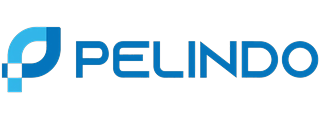
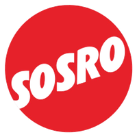
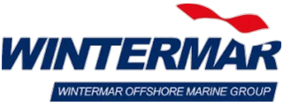
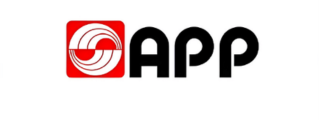
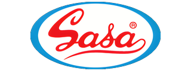
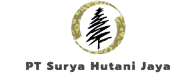
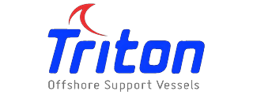
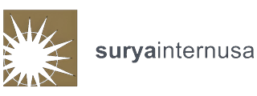
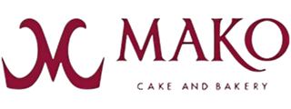
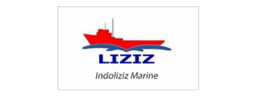
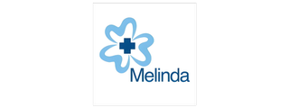
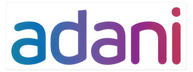
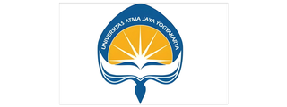
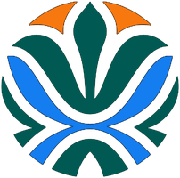
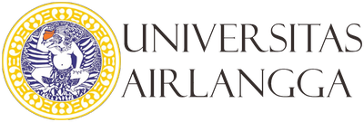
dan masih banyak klien lainnya di seluruh Indonesia 🇮🇩
Kepercayaan ratusan klien adalah bukti nyata dedikasi kami selama lebih dari 24 tahun.